Make it your own
Create text, image and audio cards. Use cloze to hide words or Image Occlusion to cover parts of a diagram. Preview before studying; open the editor when you want to make changes.
Flashcards for iPhone & iPad
Import a deck or make your own cards. Find what you need—even words inside images—and get straight to reviewing.
Your content. Your pace. No Recolio account required.
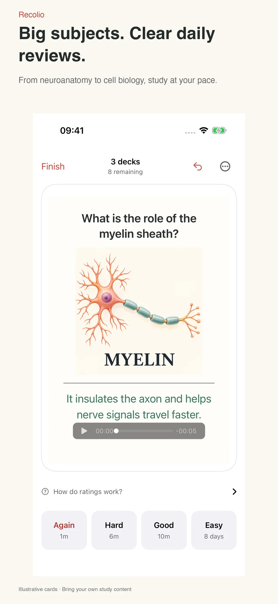
01 / A familiar place to start
Choose an .apkg file, check the import, and save it to a folder. Preview the rendered cards without changing your study history. Start a review when you’re ready.
Read the guide →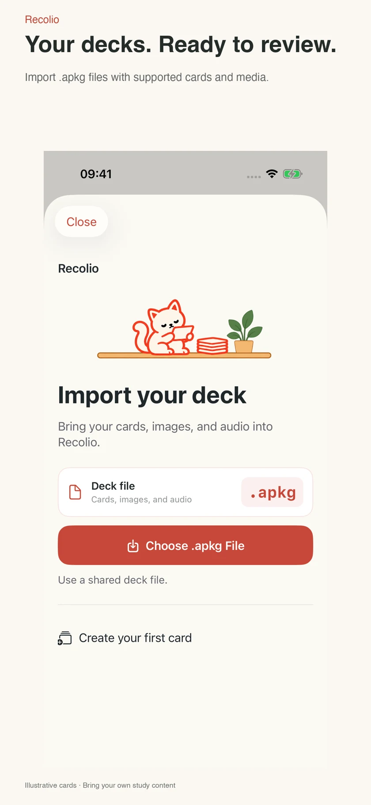
02 / Find the card you remember
Search card text and words recognized in images on either side. Image matches show a thumbnail and highlighted words. Search from Today to open the card and review it right away.
Read the guide →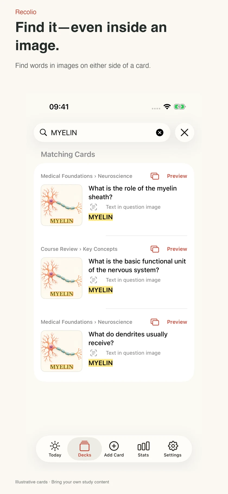
03 / Organization that makes sense
Give folders names that work for you: a semester, an exam, a language. Keep decks together, browse their hierarchy, and choose what to study without renaming the original decks.
Read the guide →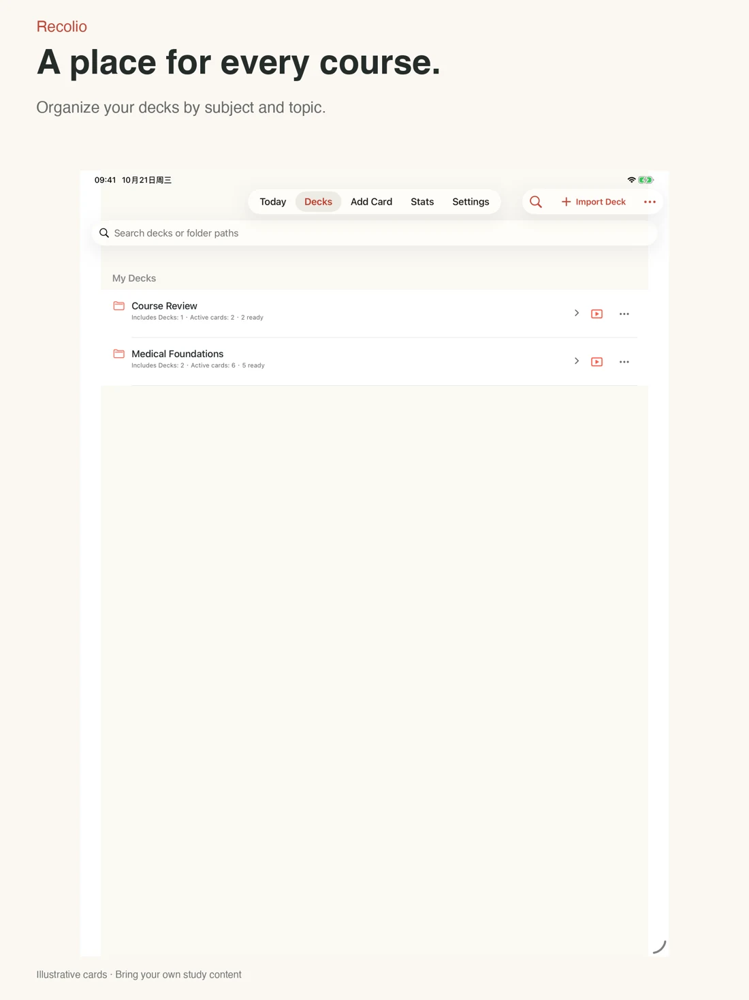
04 / Pick up on your other device
Turn on iCloud sync to keep cards and study progress together across devices using the same Apple Account. Sync is off by default and requires Recolio Pro, iCloud access, and available storage.
Read the guide →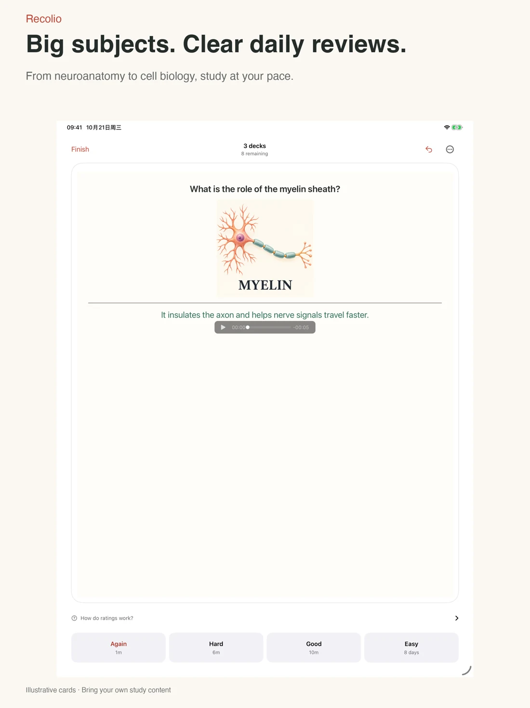
iCloud sync · Recolio Pro
Create text, image and audio cards. Use cloze to hide words or Image Occlusion to cover parts of a diagram. Preview before studying; open the editor when you want to make changes.
Spaced repetition schedules reviews using your answers. Again means you couldn’t recall it; Hard means you recalled it with effort. Good and Easy distinguish comfortable from effortless recall.
Help for the next step
Import, organize, search, study and sync.
Read the guide →Troubleshooting and purchase help.
Get help →How local storage, iCloud and permissions work.
Read the policy →Real app screenshots. Original example cards; create or import your own content.
适用于 iPhone 和 iPad 的学习卡片
导入牌组，或制作自己的卡片。轻松找到所需内容，连图片里的文字也能搜索，找到就能开始复习。
自己的内容，自己的节奏，无需注册 Recolio 账户。
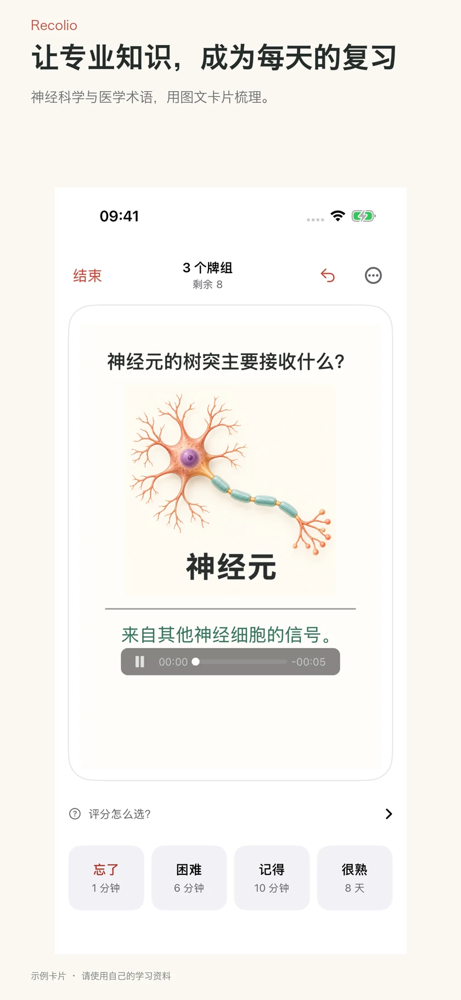
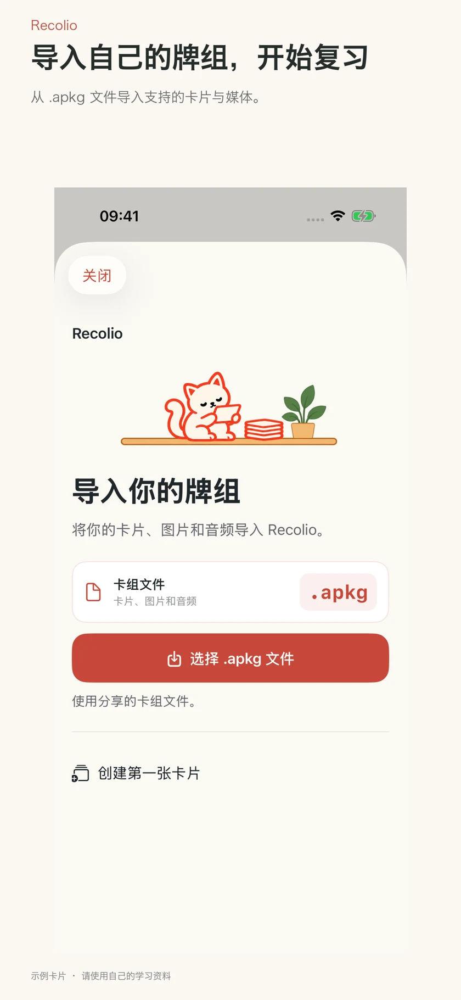
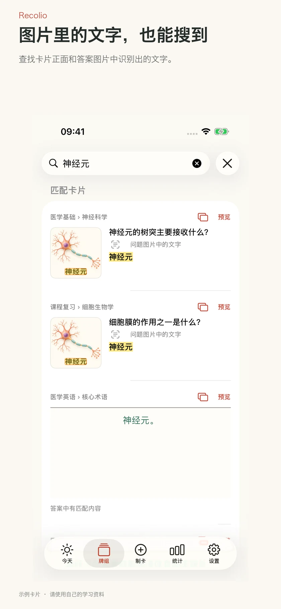
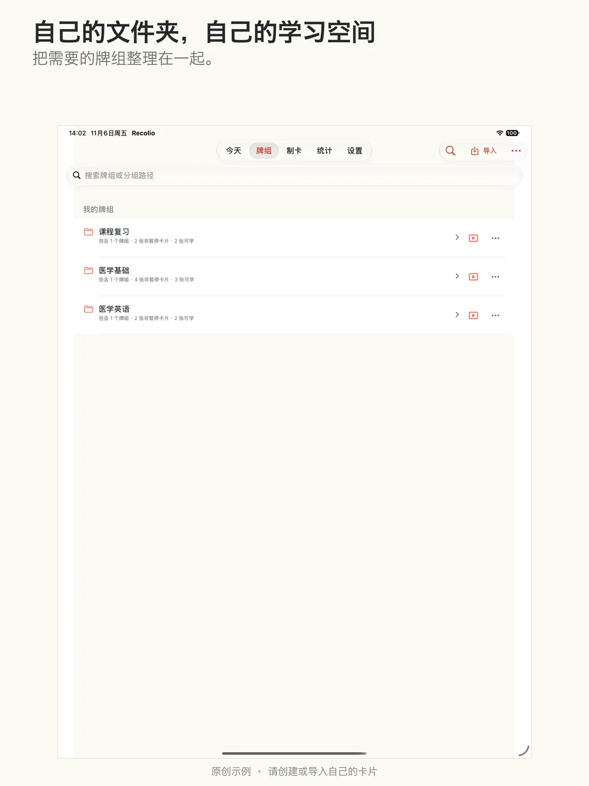
04 / 换台设备，继续学习
开启 iCloud 同步后，在登录同一 Apple 账户的设备之间同步卡片和学习进度。同步默认关闭，需要 Recolio Pro、iCloud 权限和可用存储空间。
阅读手册 →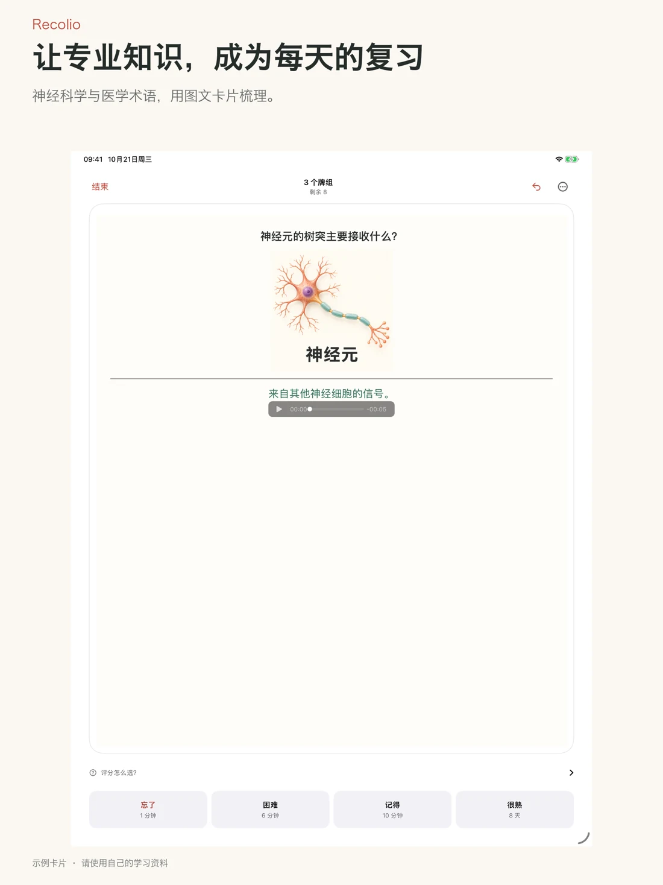
iCloud 同步 · Recolio Pro
加入文字、图片和音频；用 Cloze 挖空文字，或用图片遮挡隐藏图解的一部分。先预览再学习，需要修改时才打开编辑器。
间隔重复根据回答安排下一次复习。Again 表示未能回忆；Hard 表示成功但费力；Good 和 Easy 区分正常回忆与轻松回忆。
下一步，需要时有帮助
真实 App 截图，展示原创示例卡片；学习内容由你创建或导入。
iPhone・iPad の学習カード
デッキを読み込んでも、自分で作っても。画像の中の文字まで検索できるので、探していたカードを見つけたら、すぐに復習へ。
自分の教材を、自分のペースで。Recolio アカウントの登録は不要です。
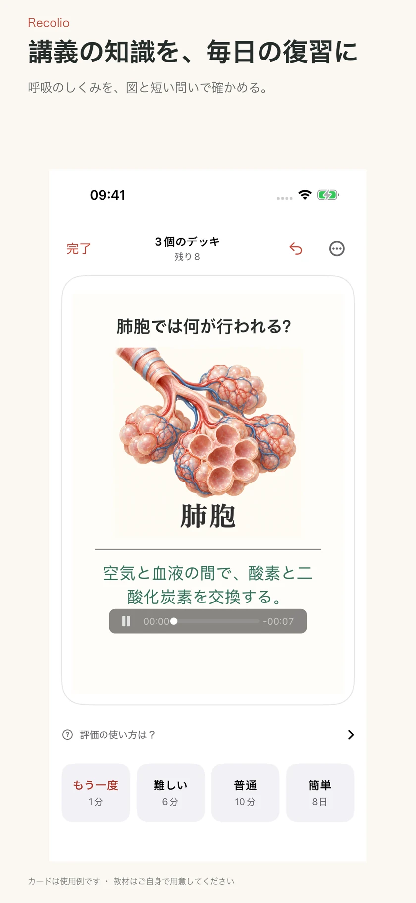
01 / すぐに始められる
.apkg ファイルを選び、内容を確認してフォルダに保存。カードの表示をプレビューしても、復習履歴は変わりません。準備ができたら学習を始めましょう。
使い方を読む →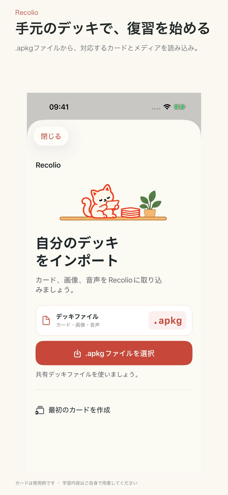
02 / 覚えている言葉から探す
カード本文に加え、表面・裏面の画像から認識した文字も検索。画像の検索結果にはサムネイルと一致した言葉が表示されます。Today からなら、そのままカードを復習できます。
使い方を読む →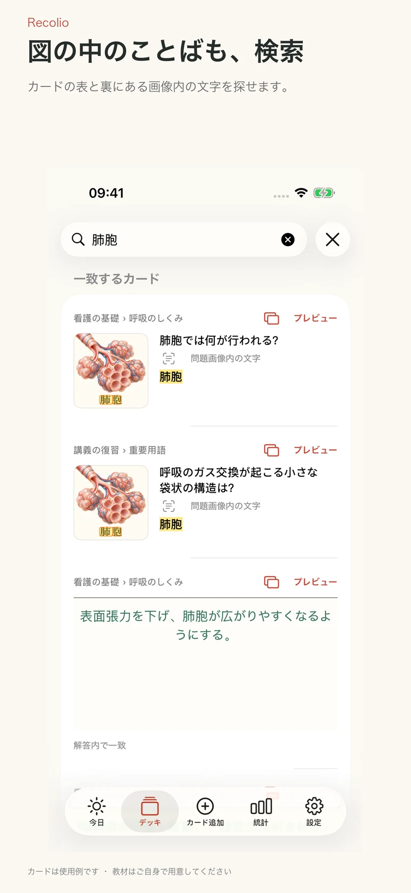
03 / 自分に合う整理方法
学期、試験、言語など、好きな名前でフォルダを作成。関連するデッキをまとめ、階層をたどって学習範囲を選べます。元のデッキ名は変わりません。
使い方を読む →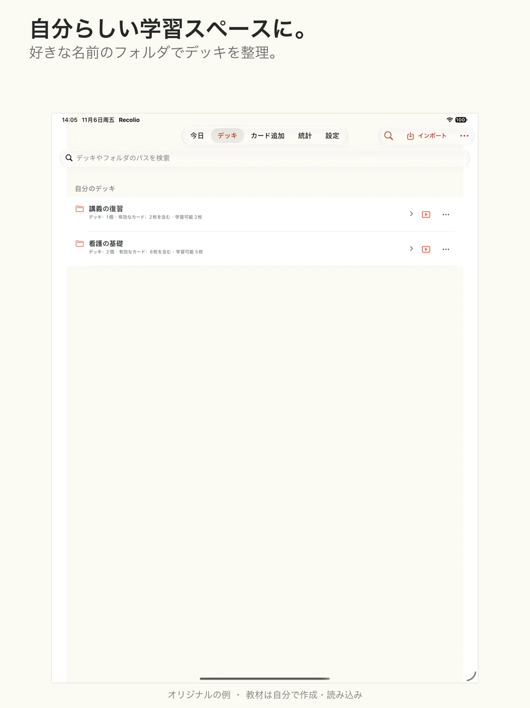
04 / 別のデバイスでも続きから
iCloud 同期を有効にすると、同じ Apple Account のデバイス間でカードと学習状況を同期できます。初期設定ではオフです。Recolio Pro、iCloud へのアクセス許可、空き容量が必要です。
使い方を読む →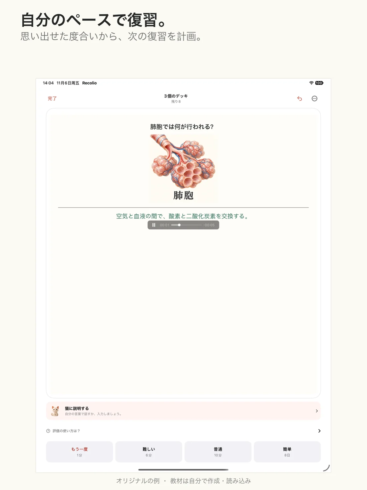
iCloud 同期 · Recolio Pro
文字、画像、音声をカードに。穴埋め（Cloze）や画像の一部を隠す機能も使えます。学習前にプレビューし、直したいときだけ編集画面へ。
間隔反復が回答に応じて次の復習を予定します。Again は思い出せなかった場合、Hard は苦労して思い出せた場合。Good と Easy で通常の想起と楽な想起を区別します。
次の一歩をサポート
実際のアプリ画面とオリジナルの例です。教材は自分で作成・読み込みできます。
iPhone과 iPad를 위한 학습 카드
덱을 가져오거나 직접 카드를 만드세요. 이미지 속 글자까지 검색하고, 찾은 카드를 바로 복습할 수 있어요.
내 학습 자료를 내 속도로. Recolio 계정 가입은 필요 없어요.
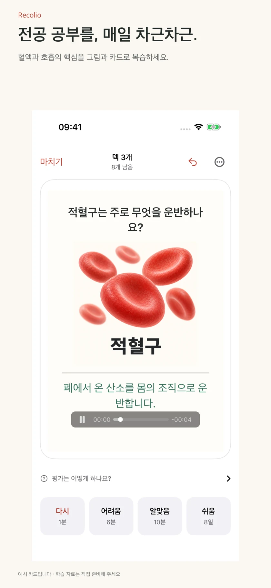
01 / 간편한 시작
.apkg 파일을 선택해 내용을 확인하고 폴더에 저장하세요. 미리 보기로 실제 카드 화면을 확인해도 복습 기록은 바뀌지 않아요. 준비되면 학습을 시작하세요.
가이드 읽기 →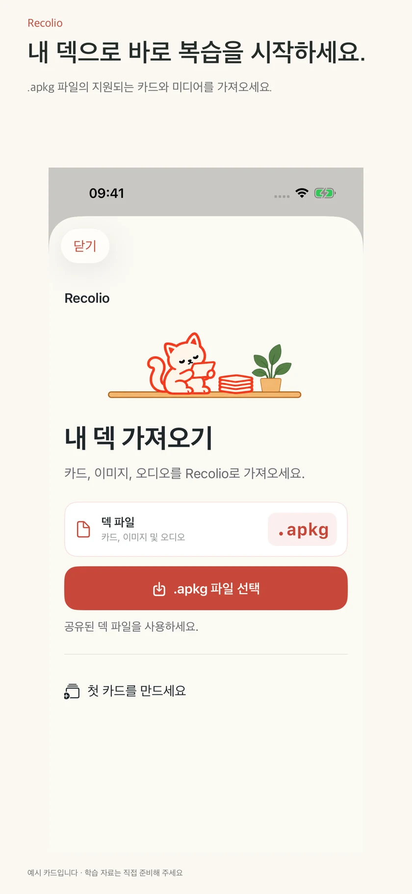
02 / 기억나는 단어로 찾기
카드 본문뿐 아니라 앞면과 뒷면 이미지에서 인식한 글자도 검색해요. 이미지 검색 결과에는 미리 보기 이미지와 강조된 검색어가 표시돼요. Today에서 찾은 카드는 바로 복습할 수 있어요.
가이드 읽기 →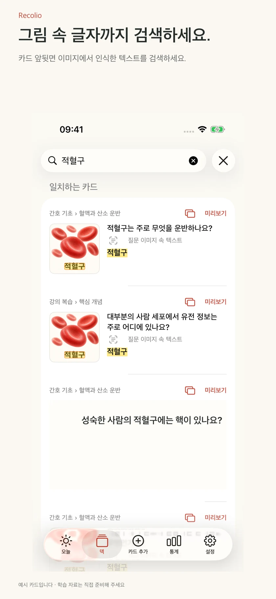
03 / 내 방식대로 정리
학기, 시험, 언어처럼 알아보기 쉬운 이름으로 폴더를 만드세요. 관련 덱을 모으고 계층을 펼쳐 학습 범위를 고를 수 있어요. 가져온 덱의 원래 이름은 유지돼요.
가이드 읽기 →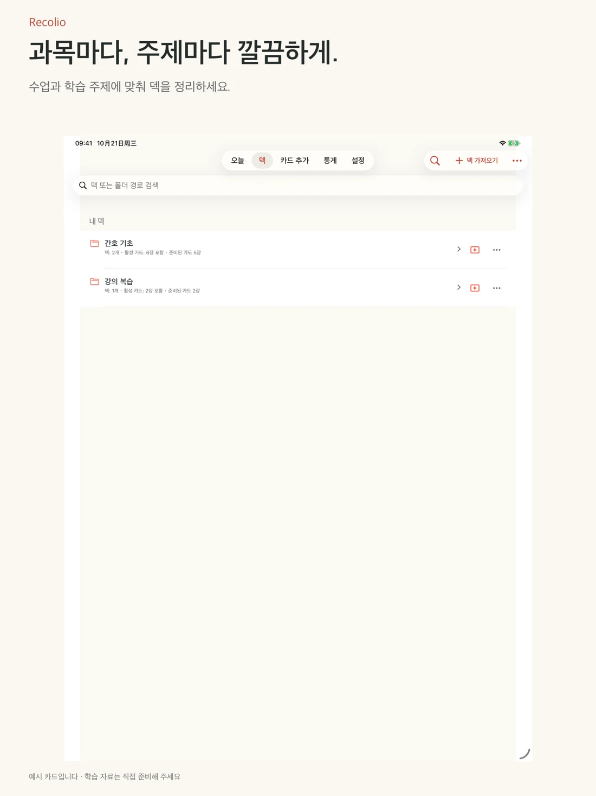
04 / 다른 기기에서도 이어서
iCloud 동기화를 켜면 같은 Apple 계정의 기기 간에 카드와 학습 진행 상황을 동기화할 수 있어요. 기본값은 꺼짐이며, Recolio Pro와 iCloud 접근 권한, 충분한 저장 공간이 필요해요.
가이드 읽기 →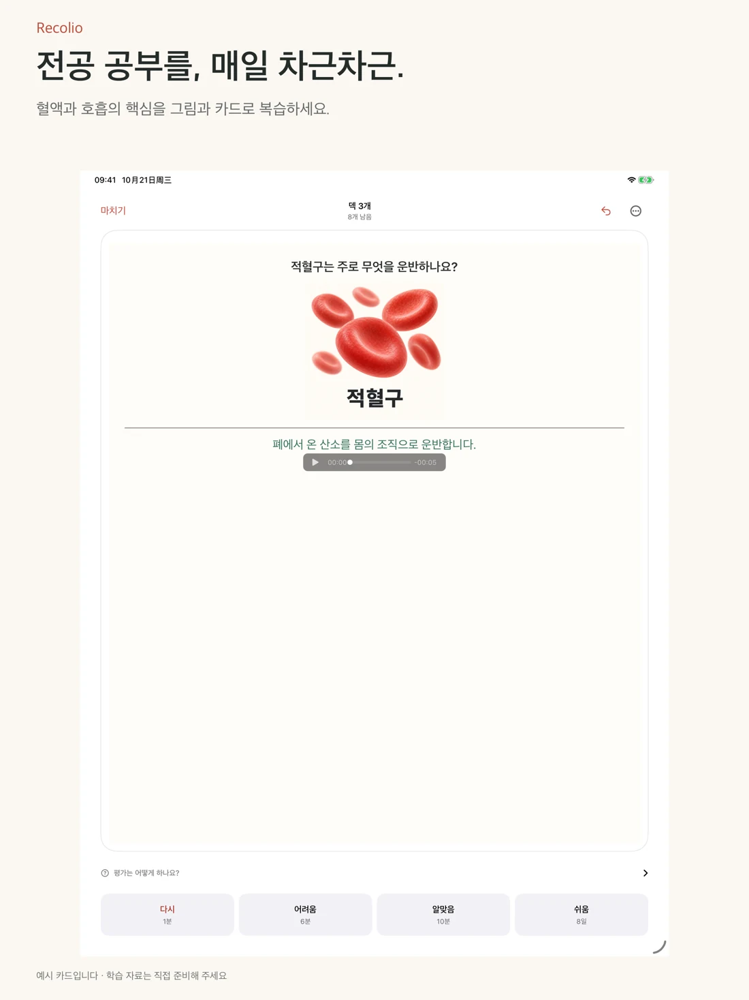
iCloud 동기화 · Recolio Pro
텍스트, 이미지, 오디오를 더하세요. Cloze로 단어를 빈칸 처리하거나 이미지 가리기로 도표의 일부를 숨길 수 있어요. 학습 전에 미리 보고, 수정할 때만 편집기를 여세요.
간격 반복은 답변에 따라 다음 복습을 예약해요. Again은 떠올리지 못한 경우, Hard는 힘들게 떠올린 경우예요. Good과 Easy는 보통으로 떠올린 경우와 쉽게 떠올린 경우를 구분해요.
다음 단계도 도와드려요
실제 앱 화면과 직접 만든 예시 카드예요. 학습 자료는 직접 만들거나 가져오세요.
Tarjetas de estudio para iPhone y iPad
Importa un mazo o crea tus tarjetas. Encuentra lo que buscas, incluso palabras en imágenes, y empieza a repasar al momento.
Tu material, a tu ritmo. Sin crear una cuenta de Recolio.
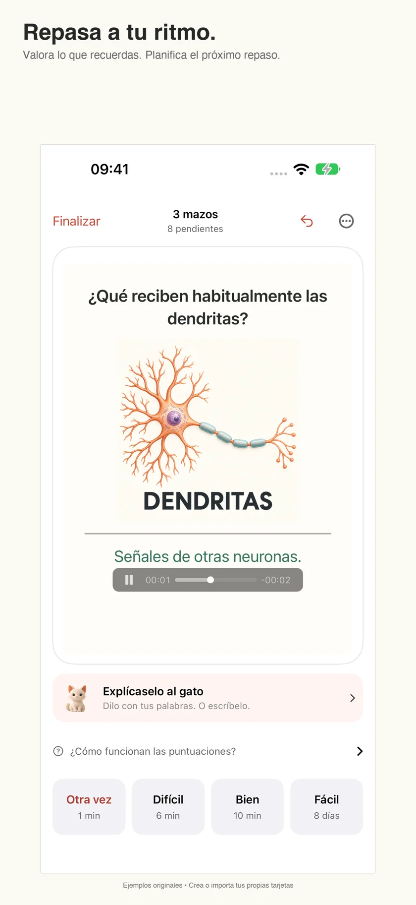
01 / Un comienzo sencillo
Elige un archivo .apkg, comprueba la importación y guárdalo en una carpeta. Explora las tarjetas sin cambiar tu historial de repaso. Empieza a estudiar cuando quieras.
Leer la guía →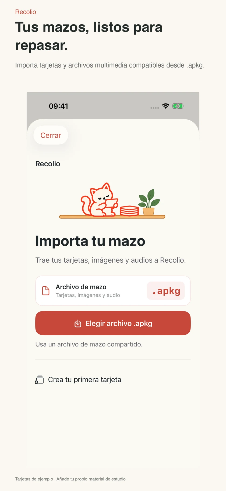
02 / Encuentra la tarjeta que recuerdas
Busca en el texto de las tarjetas y en las palabras reconocidas en las imágenes de ambos lados. Las coincidencias incluyen una miniatura y palabras resaltadas. Desde Today, abre el resultado y repasa al momento.
Leer la guía →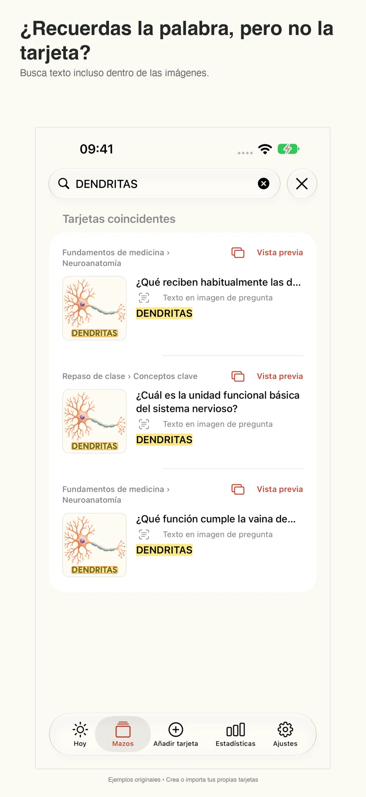
03 / Organización a tu manera
Nombra tus carpetas por semestre, examen o idioma. Agrupa mazos, recorre sus niveles y elige qué estudiar sin cambiar los nombres originales de los mazos importados.
Leer la guía →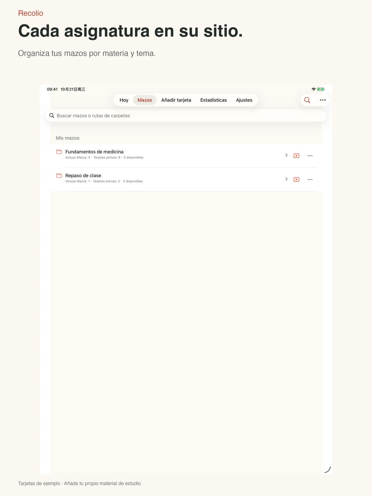
04 / Continúa en otro dispositivo
Activa la sincronización con iCloud para mantener tus tarjetas y progreso entre dispositivos con la misma cuenta de Apple. Está desactivada por defecto y requiere Recolio Pro, acceso a iCloud y espacio disponible.
Leer la guía →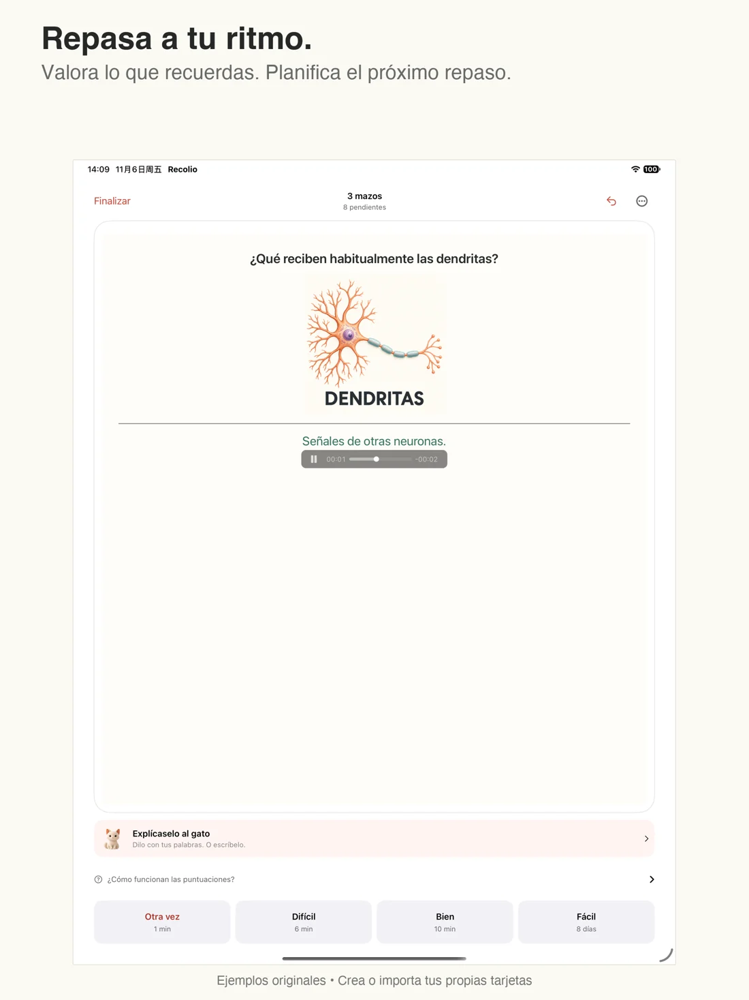
Sincronización iCloud · Recolio Pro
Añade texto, imágenes y audio. Oculta palabras con Cloze o partes de un diagrama con la ocultación de imágenes. Explora antes de estudiar y abre el editor solo cuando quieras cambiar algo.
La repetición espaciada programa repasos según tus respuestas. Again indica que no recordaste; Hard, que recordaste con esfuerzo. Good y Easy distinguen recordar con normalidad de hacerlo con facilidad.
Ayuda para el siguiente paso
Importa, organiza, busca, estudia y sincroniza.
Leer la guía →Solución de problemas y ayuda con compras.
Obtener ayuda →Almacenamiento local, iCloud y permisos.
Leer la política →Capturas reales con tarjetas de ejemplo originales. Crea o importa tu propio material.
適用於 iPhone 與 iPad 的學習卡片
匯入牌組，或製作自己的卡片。輕鬆找到所需內容，連圖片裡的文字也能搜尋，找到就能開始複習。
自己的教材，自己的步調，無須註冊 Recolio 帳號。
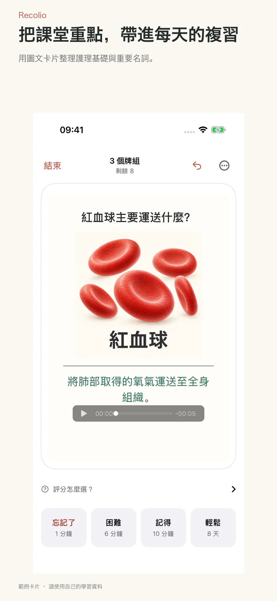
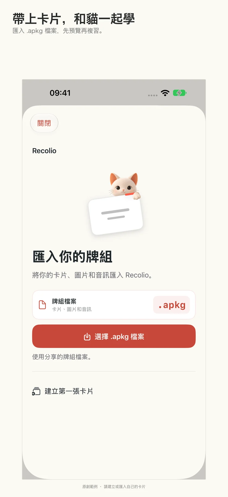
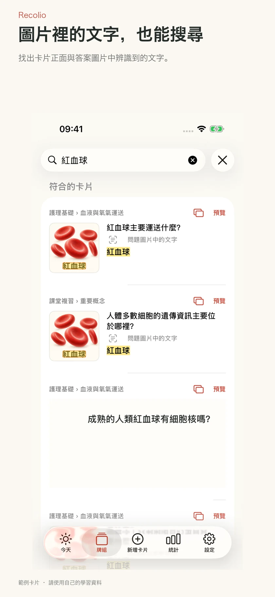
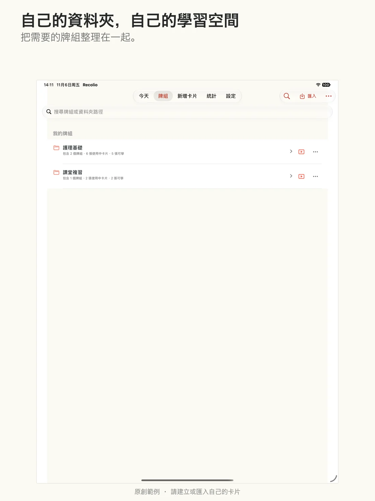
04 / 換台裝置，接著學
開啟 iCloud 同步後，在登入相同 Apple 帳號的裝置間同步卡片與學習進度。同步預設關閉，需要 Recolio Pro、iCloud 權限與可用儲存空間。
閱讀手冊 →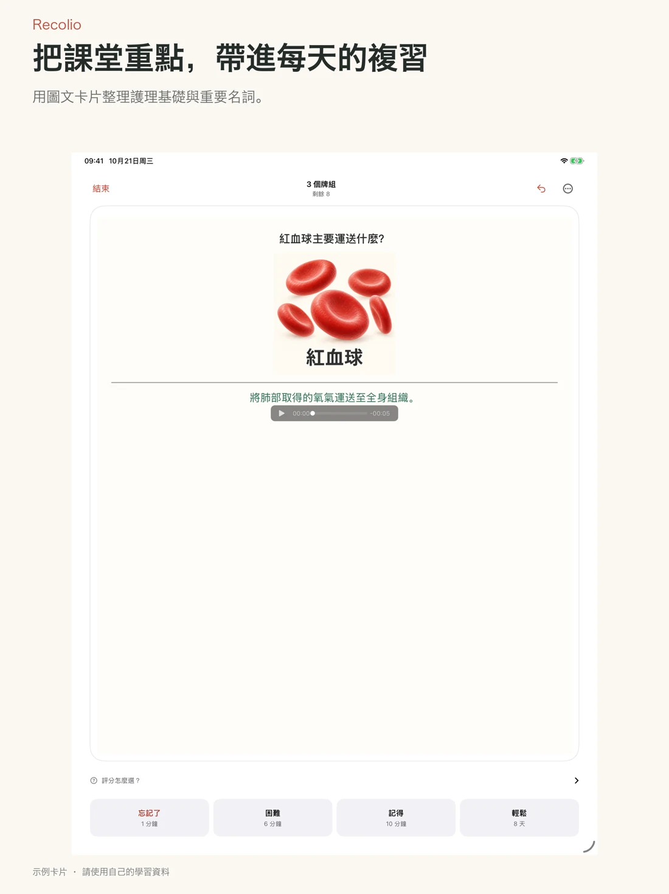
iCloud 同步 · Recolio Pro
加入文字、圖片與音訊；用 Cloze 挖空文字，或以圖片遮擋隱藏圖解的一部分。先預覽再學習，需要修改時才開啟編輯器。
間隔重複會依回答安排下次複習。Again 代表未能回想；Hard 代表成功但費力；Good 與 Easy 區分正常回想與輕鬆回想。
下一步，需要時有支援
真實 App 截圖，展示原創範例卡片；教材由你建立或匯入。